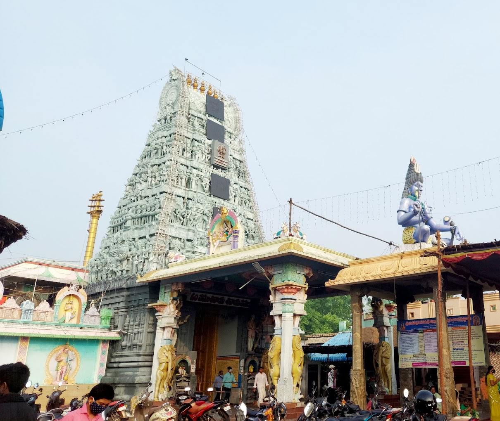

Sri Mulastaneswara Swamy Temple

Temple Name: Sri Mulastaneswara Swamy Temple
History: Mulasthaneswara Swamy Temple is located in Mulapet area in Nellore. This temple is of 1400 years old and is located to the west of Nellore. Manumasidhi rulers constructed the Raja Gopuram. As the Lord manifested himself under Nelli tree (Philanthus Emblica), Uru means village, thus the place got the name as Nellore. Tikkana Somayaji started Mahabharatha translation into Telugu only after offering prayers to the deity here.
Maps